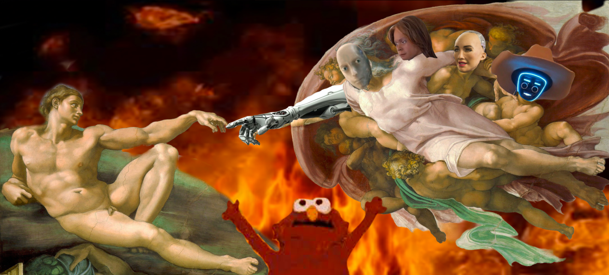

This meme mashup combines Michelangelo’s Creation of Adam with modern internet memes, including Burning Elmo and the I, Robot “No” meme, alongside robot imagery. By mixing classical art with internet humor, the piece explores human creation of artificial intelligence, the fear of losing control, and the possibility of technology turning against its creators.
